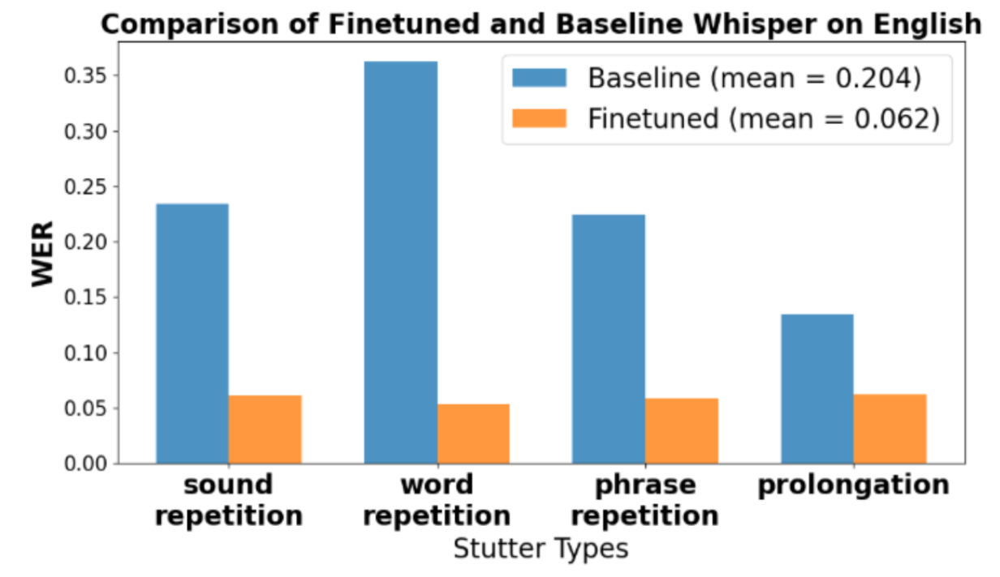

Machine learning · Olin PiNT · Fall 2024
Speech Recognition for Stuttered Speech
Evaluating and fine-tuning speech recognition systems to better transcribe stuttered speech.

The problem
Automatic speech recognition is used in voice assistants, translation, and other tools, but it can struggle with stuttered speech. Our team studied transcription accuracy across stutter types in English and Mandarin and explored fine-tuning to reduce the gap in performance.
My contribution
I helped build the training pipeline, debug GPU issues, preprocess data, create visualizations, and write the research poster.
Results
The fine-tuned models achieved 14.2% lower word error rate for English stuttered speech and 47.4% lower character error rate for Mandarin stuttered speech. Our poster received an Honorable Mention at the 2025 AAAS Annual Meeting.
This project gave me experience with the full machine learning research pipeline and with communicating results as part of a team.